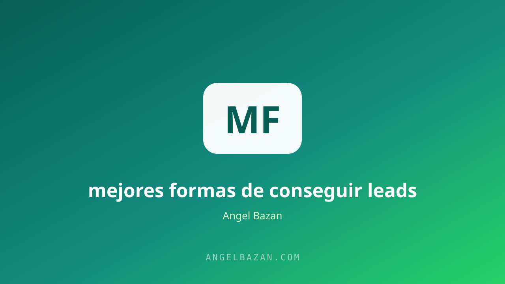

Las mejores formas de conseguir leads para tu negocio
Leads baratos que no compran valen menos que leads caros que sí lo hacen. Estas son las estrategias de captación que funcionan en 2026, ordenadas por esfuerzo y por costo.
En este artículo
Conseguir leads parece una carrera por cantidad, pero es una carrera por calidad. Puedes llenar tu WhatsApp de 1.000 contactos en una semana y no vender nada, o llegar a 50 personas listas para comprar y facturar el mes. La diferencia no es la suerte: es elegir bien las fuentes de captación y saber qué hacer con cada contacto antes de que llegue.
En 2026 existen cuatro grandes formas de conseguir leads: contenido orgánico, publicidad pagada, WhatsApp y la automatización con IA. Ninguna es excluyente; la estrategia ganadora las combina. Esta guía te las ordena por costo y esfuerzo para que elijas las dos o tres que tu negocio puede sostener hoy.

Leads calientes vs fríos
Un lead frío vio tu anuncio y dejó un dato por curiosidad. Un lead caliente te escribió porque tiene el problema ahora. La diferencia se nota en la conversión: los calientes cierran 5 a 10 veces más. Tu trabajo no es solo conseguir leads: es conseguir la clase de leads correcta. Por eso, antes de lanzar cualquier canal, define el perfil exacto de tu cliente y su punto de dolor; el método completo para encontrarlos está en cómo encontrar clientes por internet.
Contenido que atrae y captura
El contenido orgánico es la fuente más barata: cuesta tiempo, no dinero. Reels y posts que resuelven un problema específico atraen personas con el problema resuelto a medias. Pero ojo: sin un siguiente paso, el contenido solo genera espectadores. Cada pieza debe terminar en un CTA claro que lleve a tu WhatsApp o a un lead magnet. La mecánica de crear piezas que generen ese deseo está en cómo crear contenido que venda.
Meta Ads con costo por lead bajo
La publicidad es la única fuente que escala de forma predecible. Dos configuraciones reinan en 2026: el objetivo Mensajes a WhatsApp, donde el lead llega directo al chat (caliente por definición), y el tráfico a una landing de captura con un lead magnet. El secreto para el costo bajo está en la creatividad (el anuncio es el targeting) y en la oferta de entrada. Arma la estructura completa con el estructurador de campañas y mide el resultado con la calculadora de CPL y ROAS. El paso a paso de las campañas está en cómo vender más con Meta Ads.
Para bajar el CPL de forma sistemática, testea en este orden: primero la creatividad (el gancho es el 80% del resultado), después la oferta de entrada (un lead magnet que resuelva un dolor inmediato baja el precio percibido) y por último la segmentación. Mucha gente invierte semanas afinando públicos cuando su anuncio apenas engancha: el orden correcto siempre empieza por el mensaje. Comparar tu copy contra el de los ganadores acelera este proceso, como se explica con el analizador de copy de competencia.
WhatsApp como embudo de captura
WhatsApp no solo recibe leads: también los genera. Una comunidad con contenido de valor, un botón de "Hablemos" en tu bio y un mensaje de bienvenida automático con una mini-oferta gratuita convierten visitas en contactos todos los días. La clave es que la conversación inicial no venda: califique. Pregunta el problema, la urgencia y el presupuesto antes de ofrecer nada. El embudo completo de captación y venta se arma como se explica en cómo crear un funnel de WhatsApp desde cero.
La ventaja de capturar en WhatsApp es que el "sí quiero" llega con contexto: no es un formulario anónimo, es una persona que te escribió con sus palabras. Ese primer mensaje ya contiene el problema tal como lo siente, y eso te da el copy exacto para tu respuesta. Anota cada pregunta que hagan los leads nuevos: son el material de oro para tu próximo anuncio, tu próximo reel y tu próxima oferta.
La IA como multiplicador de leads
- Chatbots que califican: responden preguntas frecuentes, agendan citas y filtran contactos antes de que un humano toque el celular.
- Segmentación por IA: analiza los mensajes de los contactos y clasifícalos por intención de compra automáticamente.
- Copy generado a escala: variantes de anuncios y mensajes para testear más rápido y más barato.
La IA no reemplaza el sistema: lo acelera. El flujo completo de automatización de conversaciones está en automatizar WhatsApp con IA.
La IA también resuelve el problema del tiempo de respuesta: un lead que recibe respuesta en menos de 5 minutos tiene muchas más probabilidades de conversión, y un bot bien entrenado responde en segundos, las 24 horas. No se trata de dejar la venta en manos de la máquina, sino de nunca dejar a un lead esperando frío. La combinación de bot para respuestas rápidas y humano para cierres es la configuración que más ventas genera por hora invertida.
B2B: lead gen sin presupuesto
Si vendes a empresas, tu mejor fuente de leads es el outbound inteligente: LinkedIn con mensajes personalizados (no plantillas genéricas), páginas de aterrizaje específicas por segmento y el seguimiento constante. La regla B2B: el que responde rápido gana; los leads empresariales se enfrían en horas. Y cada canal de captación debe rastrearse: etiqueta todos tus enlaces con UTMs desde el constructor de UTMs para saber exactamente qué canal trae a cada cliente.
Preguntas frecuentes
¿Cuánto debo pagar por un lead? Depende de tu ticket: si vendes a S/ 1.000, un lead de S/ 20 es excelente; si vendes a S/ 50, necesitas un CPL bajo. La regla es que el valor del cliente justifique el costo de adquisición.
¿Qué canal funciona primero? Contenido orgánico a WhatsApp si no tienes presupuesto; Meta Ads a WhatsApp si puedes invertir desde S/ 15-20 diarios. Ambos crecen juntos después.
¿La IA puede conseguir leads sin mí? Puede calificarlos, responderlos y darles seguimiento, pero la captación necesita un imán: contenido, publicidad o comunidad. La IA multiplica; no crea de la nada.

Angel Bazán
Especialista en funnels, Meta Ads y WhatsApp + IA. Ayudo a negocios a vender más combinando tráfico pagado con conversaciones automatizadas.
Conoce más sobre mí →Aprende a crear y vender productos digitales con Meta Ads, WhatsApp e IA
Clases en vivo, estrategias y recursos para construir tu sistema desde cero. 🚀
Únete gratis al grupo